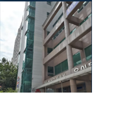

Sunday Service
🕒 12:00 – 14:00 KST
Ibadah Raya Minggu berbahasa Indonesia. Pujian penyembahan, pemberitaan firman Tuhan, dan dilanjutkan dengan makan siang & ramah tamah bersama.
“Firman-Mu itu pelita bagi kakiku dan terang bagi jalanku.”
— Mazmur 119:105Mari bergabung bertumbuh dalam iman dan firman Tuhan bersama saudara seiman di Busan.
Ibadah Raya Minggu berbahasa Indonesia. Pujian penyembahan, pemberitaan firman Tuhan, dan dilanjutkan dengan makan siang & ramah tamah bersama.
Persekutuan komsel daerah Kyungsung, waktu sharing firman Tuhan serta doa syafaat bersama.
Persekutuan komsel daerah Busan yang diadakan secara online, saling menguatkan dan berbagi firman Tuhan.
Pendalaman Alkitab di gereja untuk memperlengkapi setiap jemaat memahami kebenaran firman secara mendalam.
Kebersamaan olahraga akhir pekan untuk menjaga kesehatan dan mempererat persaudaraan jemaat.
“Aku bersyukur kepada Dia, yang menguatkan aku, yaitu Kristus Yesus, Tuhan kita, karena Ia menganggap aku setia dan mempercayakan pelayanan ini kepadaku.”
Ikuti siaran langsung Ibadah Raya Minggu serta arsip khotbah firman Tuhan melalui kanal resmi YouTube SIS Indonesia.
Ibadah Raya Minggu disiarkan secara langsung (Live Streaming) setiap hari Minggu pukul 12:00 – 14:00 KST (Waktu Korea). Bagi jemaat, sahabat, dan keluarga yang berhalangan hadir di lokasi, Anda dapat bergabung dalam ibadah dan pujian secara daring.
Gereja SIS bukan sekadar tempat beribadah, melainkan rumah kedua bagi kita di perantauan.
Komunitas mahasiswa S1, S2, dan bahasa di berbagai universitas Busan (Pusan National Univ, Kyungsung, Pukyong, Tongmyong, dll).
Dukungan rohani dan kekeluargaan erat bagi rekan-rekan pekerja migran Indonesia yang berkarya di kawasan Busan & Gyeongnam.
Kegiatan rekreasi tahunan, retreat pembaharuan rohani, piknik musim semi, dan jelajah keindahan kota pelabuhan Busan.
Baru pertama kali tiba di Busan? Kami siap menyambut Anda dengan hangat, membantu adaptasi dan kehidupan di Korea Selatan.
Belum ada kegiatan mendatang saat ini. Nantikan info Retreat, Natal, Hangout, dan acara lainnya di sini.
Gedung sangat mudah diakses dengan transportasi umum Subway Busan.

Lantai 2 (2nd Floor)